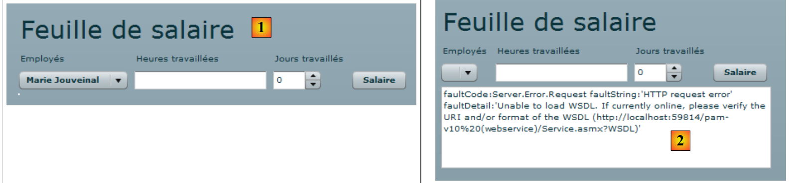
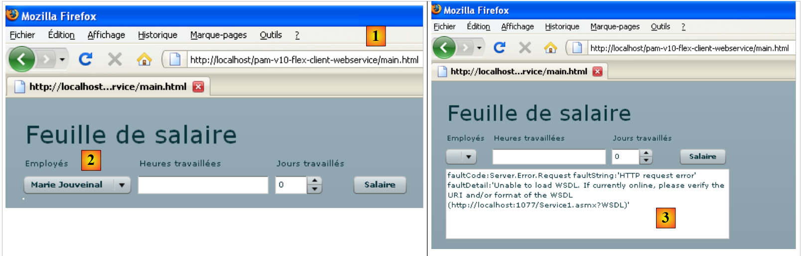
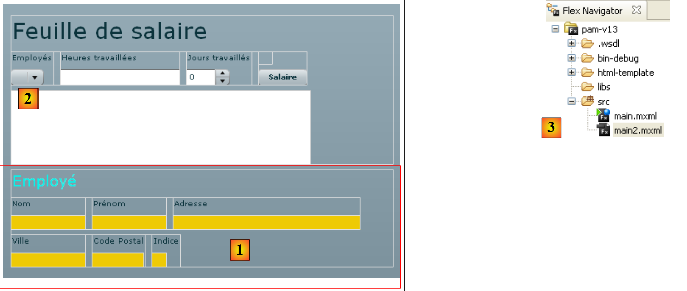
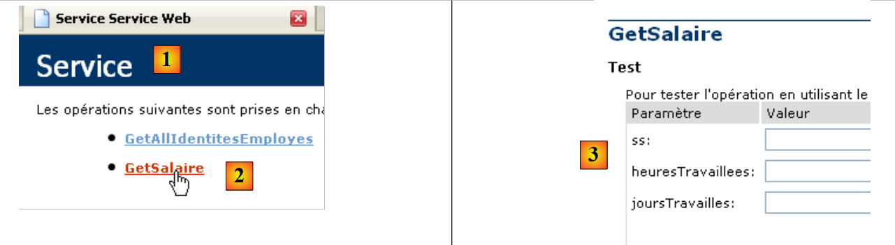
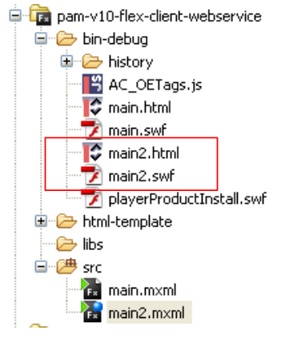

14. La aplicación [SimuPaie] – version 10 – cliente Flex de un servicio web ASP.NET
A continuación, presentamos un cliente Flex del servicio web ASP.NET de la version 5. El IDE utilizado es Flex Builder 3. Se puede descargar una demostración de este producto en URL [https://www.adobe.com/cfusion/tdrc/index.cfm?loc=fr_fr&product=flex]. Flex Builder 3 es un IDE Eclipse. Por otra parte, para ejecutar el cliente Flex, utilizamos un servidor web Apache de la herramienta Wamp [http://www.wampserver.com/]. Cualquier servidor Apache es válido. El navegador que muestra el cliente Flex debe disponer del plugin Flash Player version 9 como mínimo.
Las aplicaciones Flex tienen la particularidad de ejecutarse dentro del complemento Flash Player del navegador. En este sentido, se asemejan a las aplicaciones Ajax, que incorporan en las páginas enviadas al navegador scripts JavaScript que luego se ejecutan dentro del navegador. Una aplicación Flex no es una aplicación web en el sentido habitual del término: es una aplicación cliente de servicios prestados por servidores web. En este sentido, es análoga a una aplicación de escritorio que fuera cliente de esos mismos servicios. Sin embargo, difiere en un punto: se descarga inicialmente desde un servidor web en un navegador que dispone del complemento Flash Player capaz de ejecutarla.
Al igual que una aplicación de escritorio, una aplicación Flex se compone principalmente de dos elementos:
- una parte de presentación: las vistas que se muestran en el navegador. Estas vistas tienen la riqueza de las ventanas de las aplicaciones de escritorio. Una vista se describe mediante un lenguaje de etiquetas llamado MXML.
- una parte de código que gestiona principalmente los eventos provocados por las acciones del usuario en la vista. Este código también puede escribirse en MXML o con un lenguaje orientado a objetos llamado ActionScript. Hay que distinguir dos tipos de eventos:
- el evento que requiere un intercambio con el servidor web: rellenar una lista con datos proporcionados por una aplicación web, enviar los datos de un formulario al servidor, etc. Flex proporciona una serie de métodos para comunicarse con el servidor de forma transparente para el desarrollador. Estos métodos son asíncronos por defecto: el usuario puede seguir interactuando con la vista durante la solicitud al servidor.
- el evento que modifica la vista mostrada sin intercambio de datos con el servidor, por ejemplo, arrastrar un elemento de un árbol para soltarlo en una lista. Este tipo de evento se gestiona íntegramente de forma local dentro del navegador.
Una aplicación Flex suele ejecutarse de la siguiente manera:
 |
- en [1], se solicita una página HTML
- en [2], se envía. Incluye un archivo binario SWF (ShockWave Flash) que contiene la aplicación Flex completa: todas las vistas y el código de gestión de eventos de las mismas. Este archivo será ejecutado por el complemento Flash Player del navegador.
 |
- La ejecución del cliente Flex se realiza de forma local en el navegador, salvo cuando necesita datos externos. En ese caso, los solicita al servidor [3]. Los recibe en [4] en diversos formatos: XML o binario. La aplicación consultada en el servidor web puede estar escrita en cualquier lenguaje. Lo único que importa es el formato de la respuesta.
Hemos descrito la arquitectura de ejecución de una aplicación Flex para que el lector perciba la diferencia entre esta y la de una aplicación web clásica, en la que las páginas no incorporan código (Javascript, Flex, Silverlight, ...) que el navegador ejecutaría. En esta última, el navegador es pasivo: simplemente muestra páginas HTML generadas en el servidor web que se las envía.
14.1. Arquitectura de la aplicación cliente/servidor
La arquitectura cliente/servidor implementada es similar a la de las versiones 6 y 8:
 |
En [1], la capa web ASP.NET se sustituye por una capa web Flex escrita en MXML y ActionScript. El cliente [C] será generado por el Flex Builder IDE. Cabe recordar aquí que esta arquitectura incluye dos servidores web no representados:
- un servidor web ASP.NET que ejecuta el servicio web [S]
- un servidor web APACHE que ejecuta el cliente web [1]
14.2. El proyecto Flex 3 del cliente
Creamos el cliente Flex con Flex Builder 3:
 |
- en Flex Builder 3, creamos un nuevo proyecto en [1]
- le damos un nombre en [2] y especificamos en [3] en qué carpeta generarlo
 |
- en [4], se le da un nombre a la aplicación principal (la que se va a ejecutar)
- en [5], el proyecto una vez generado
- en [6], el archivo principal de la aplicación MXML
- un archivo MXML contiene una vista y el código de gestión de eventos de la misma. La pestaña [Source] [7] da acceso al archivo MXML. En él se encuentran las etiquetas <mx> que describen la vista, así como el código ActionScript.
- La vista se puede crear gráficamente utilizando la pestaña [Design] [8]. Las etiquetas MXML que describen la vista se generan entonces automáticamente en la pestaña [Source]. Lo contrario también es cierto: las etiquetas MXML añadidas directamente en la pestaña [Source] se reflejan gráficamente en la pestaña [Design].
14.3. Vista n.º 1
Vamos a construir progresivamente una interfaz web análoga a la de version 1 (véase el apartado 4). En primer lugar, construimos la siguiente interfaz:
 |
- en [1], la vista cuando se ha podido establecer la conexión con el servicio web. El cuadro combinado de empleados se rellena entonces.
- en [2], la vista cuando no se ha podido establecer la conexión con el servicio web. En ese caso, se muestra un mensaje de error.
El archivo principal [main.xml] del cliente es el siguiente:
<?xml version="1.0" encoding="utf-8"?>
<mx:Application xmlns:mx="http://www.adobe.com/2006/mxml" layout="vertical"
creationComplete="init()">
<mx:VBox width="100%">
<mx:Label text="Feuille de salaire" fontSize="30"/>
<mx:HBox>
<mx:VBox>
<mx:Label text="Employés"/>
<mx:ComboBox id="cmbEmployes" dataProvider="{employes}" labelFunction="displayEmploye"/>
</mx:VBox>
<mx:VBox>
<mx:Label text="Heures travaillées"/>
<mx:TextInput id="txtHeuresTravaillees"/>
</mx:VBox>
<mx:VBox>
<mx:Label text="Jours travaillés"/>
<mx:NumericStepper id="joursTravailles" minimum="0" maximum="31" stepSize="1"/>
</mx:VBox>
<mx:VBox>
<mx:Label text=""/>
<mx:Button id="btnSalaire" label="Salaire"/>
</mx:VBox>
</mx:HBox>
<mx:TextArea id="msg" minWidth="400" minHeight="100" editable="false" visible="true" enabled="true" horizontalScrollPolicy="auto" verticalScrollPolicy="auto" x="0" y="0" maxHeight="100" maxWidth="400"/>
</mx:VBox>
<mx:WebService ...>
...
</mx:WebService>
<mx:Script>
<![CDATA[
...
// gestión de la option [Terminer la session]
[Bindable]
private var employes : ArrayCollection;
private function init():void{
...
}
]]>
</mx:Script>
</mx:Application>
En este código, hay que distinguir varios elementos:
- la definición de la aplicación (líneas 2-3)
- la descripción de la vista de la misma (líneas 4-25)
- los controladores de eventos en lenguaje ActionScript dentro de la etiqueta <mx:Script> (líneas 31-42).
- la definición del servicio web remoto (líneas 27-29)
Comencemos por comentar la definición de la propia aplicación y la descripción de su vista:
- líneas 2-3: definen:
- el modo de disposición de los componentes en el contenedor de la vista. El atributo layout="vertical" indica que los componentes se colocarán uno debajo de otro.
- el método que se ejecutará cuando se haya instanciado la vista, c.a.d. el momento en que se hayan instanciado todos sus componentes. El atributo creationComplete="init();" indica que se debe ejecutar el método init de la línea 38. creationComplete es uno de los eventos que puede emitir la clase Application.
- Las líneas 4-25 definen los componentes de la vista
- líneas 4-25: un contenedor vertical: los componentes se colocarán uno debajo de otro
- línea 5: define un texto
- líneas 6-23: un contenedor horizontal: los componentes se colocarán horizontalmente en él.
- Líneas 7-10: un contenedor vertical que contendrá un texto y una lista desplegable
- línea 8: el texto
- línea 9: la lista desplegable en la que se incluirá la lista de empleados. La etiqueta dataProvider="{employes}" indica la fuente de los datos que deben completar la lista. Aquí, la lista se rellenará con el objeto «employes» definido en la línea 36. Para poder escribir dataProvider="{employes}", es necesario que el campo «employes» tenga el atributo [Bindable] (línea 35). Este atributo permite que una variable ActionScript sea referenciada fuera de la etiqueta <mx:Script>. El campo «employes» es de tipo ArrayCollection, un tipo ActionScript que permite almacenar listas de objetos, en este caso una lista de objetos de tipo «Employe».
- líneas 11-14: un contenedor vertical que contendrá un texto y un campo de entrada
- línea 12: el texto
- línea 13: el campo de introducción de las horas trabajadas.
- líneas 15-18: un contenedor vertical que contendrá un texto y un contador
- línea 16: el texto
- línea 17: el contador que permitirá introducir los días trabajados.
- líneas 19-22: un contenedor vertical que contendrá un texto y un botón que activará el cálculo del salario de la persona seleccionada en el combo.
- línea 20: el texto
- línea 21: el botón.
- línea 23: fin del contenedor horizontal iniciado en la línea 6
- línea 24: un cuadro de texto en un componente de tipo TextArea. Mostrará los mensajes de error.
- línea 25: fin del contenedor vertical iniciado en la línea 4
Las líneas 4-25 generan la siguiente vista en la pestaña [Design]:
 |
- [1]: generado por el componente Label de la línea 5
- [2]: generado por el componente ComboBox de la línea 9
- [3]: generado por el componente TextInput de la línea 13
- [4]: generado por el componente NumericStepper de la línea 17
- [5]: ha sido generado por el componente Button de la línea 21
- [6]: generado por el componente TextArea de la línea 24
Veamos ahora la declaración del servicio web remoto:
<mx:WebService id="pam"
wsdl="http://localhost:1077/Service1.asmx?WSDL"
fault="wsFault(event);"
showBusyCursor="true">
<mx:operation
name="GetAllIdentitesEmployes"
result="loadEmployesCompleted(event)"
fault="loadEmployesFault(event);">
<mx:request/>
</mx:operation>
</mx:WebService>
- línea 1: el servicio web es un componente con identificador pam (atributo id)
- línea 2: el URI del archivo WSDL del servicio web (véase el apartado 9.2)
- línea 3: el método que se debe ejecutar en caso de error durante los intercambios con el servicio web: el método wsFault.
- línea 4: solicita que se muestre un indicador para indicar al usuario que se está produciendo un intercambio con el servicio web.
- líneas 5-10: una de las operaciones ofrecidas por el servicio web remoto. En este caso, el método GetAllIdentitesEmployes.
- línea 7: el método que se ejecutará cuando la llamada a este método finalice normalmente, c.a.d. cuando el servicio web devuelve correctamente la lista de empleados
- línea 8: el método que se ejecutará cuando la llamada a este método finalice con un error.
- línea 9: los parámetros de la operación GetAllIdentitesEmployes. Sabemos que este método no espera parámetros. Por lo tanto, dejamos la etiqueta <mx:request> vacía.
Veamos ahora el código ActionScript vinculado al servicio web:
<mx:Script>
<![CDATA[
import mx.rpc.events.FaultEvent;
import mx.collections.ArrayCollection;
import mx.rpc.events.ResultEvent;
// inicializar página maestra
[Bindable]
private var employes : ArrayCollection;
private function init():void{
// on note les coordonnées de la zone de message
msgHeight=msg.height;
msgWidth=msg.width;
// on cache la zone de message
hideMsg();
// requête au service web distant pour avoir la liste simplifiée des employés
pam.GetAllIdentitesEmployes.send();
}
private function wsFault(event:Event):void{
// on signale l'erreur
msg.text="Service distant indisponible";
showMsg();
}
private function loadEmployesCompleted(event:ResultEvent):void{
// el menú
employes=event.result as ArrayCollection;
}
private function displayEmploye(employe:Object):String{
// fijar el menú
return employe.Prenom + " " + employe.Nom;
}
private function loadEmployesFault(event:FaultEvent):void{
// configuramos las opciones del menú
msg.text=event.fault.message;
// carga de la página
showMsg();
}
// gestor de eventos
private var msgWidth:int;
private var msgHeight:int;
private function hideMsg():void{
msg.height=0;
msg.width=0;
}
private function showMsg():void{
msg.height=msgHeight;
msg.width=msgWidth;
}
]]>
</mx:Script>
- línea 11: el método init se ejecuta al iniciar la aplicación porque hemos escrito:
<mx:Application xmlns:mx="http://www.adobe.com/2006/mxml" layout="vertical"
creationComplete="init()">
- líneas 13-14: se almacenan la altura y la anchura del área de mensaje. Se utilizan dos métodos, hideMsg (líneas 48-51) y showMsg (líneas 53-56), para ocultar o mostrar el área de mensajes, respectivamente, dependiendo de si se ha producido un error o no. El método hideMsg oculta el área de mensajes estableciendo su altura y anchura en 0. El método showMsg muestra el área de mensajes restableciendo la altura y anchura memorizadas en el método init.
- línea 16: se oculta el área de mensajes. Al principio, no hay ningún error.
- Línea 18: se llama al método GetAllIdentitesEmploye (línea 6 del servicio web) del servicio web pam (línea 1 del servicio web). La llamada es asíncrona. La línea 7 del servicio web indica que el método loadEmployesCompleted se ejecutará si esta llamada asíncrona finaliza correctamente. La línea 8 del servicio web indica que se ejecutará el método loadEmployesFault si esta llamada asíncrona falla.
- línea 27: el método loadEmployesCompleted, que se ejecuta si la llamada al servicio web de la línea 18 se completa con éxito.
- línea 29: sabemos que el servicio web devuelve una respuesta XML. Es conveniente volver a ella para comprender el código ActionScript:
 |
- en [1], página del servicio web [Service.asmx]
- en [2], el enlace a la página de prueba del método [GetAllIdentitesEmployes]
- en [3], la prueba se ha realizado. No se espera ningún parámetro.
- en [4]: la respuesta XML contiene una tabla de empleados. Para cada uno de ellos, hay cinco datos encapsulados en las etiquetas <Id>, <Version>, <SS>, <Apellido>, <Nombre>. Si la respuesta XML se coloca en una tabla de empleados de tipo ArrayCollection:
- employes.getItemAt(i): es el elemento n.º i de la tabla
- employes.getItemAt(i).SS: es el número de la Seguridad Social de este empleado.
- employes.getItemAt(i).Nombre: es el nombre de este empleado
- ...
Volvamos al código ActionScript:
- línea 29: event.result representa la respuesta XML del servicio web. El método GetAllIdentitesEmployes devuelve una matriz de empleados. event.result representa esta matriz de empleados. Se coloca en una variable de tipo ArrayCollection, un tipo que representa, en general, una colección de objetos. Esta variable, denominada «empleados», se declara en la línea 9. Recordemos que esta variable es la fuente de datos del cuadro combinado de empleados:
<mx:ComboBox id="cmbEmployes" dataProvider="{employes}" labelFunction="displayEmploye"/>
Para cada empleado de su fuente de datos, el combo llamará al método displayEmploye (atributo labelFunction) para mostrar al empleado. En las líneas 32-34 se ve que este método muestra el nombre y los apellidos del empleado.
- Línea 37: el método loadEmployesFault, que se ejecuta si la llamada al servicio web de la línea 18 falla. event.fault.message es el mensaje de error devuelto por el servicio web.
- Línea 39: este mensaje de error se coloca en el campo de mensaje
- línea 41: se muestra el campo de mensaje.
Una vez compilada la aplicación, su código ejecutable se encuentra en la carpeta [bin-debug] del proyecto Flex:
 |
Arriba,
- el archivo [main.html] representa el archivo HTML que el navegador solicitará al servidor web para obtener el cliente Flex
- el archivo [main.swf] es el binario del cliente Flex que se encapsulará en la página HTML enviada al navegador y que luego ejecutará el complemento Flash Player de este.
Ya estamos listos para ejecutar el cliente Flex. Antes, debemos configurar el entorno de ejecución que necesita. Volvamos a la arquitectura cliente/servidor probada:
 |
Lado del servidor:
- iniciar el servicio web ASP.NET [S]
En el lado del cliente:
- iniciar el servidor Apache al que se solicitará la aplicación Flex.
Aquí utilizamos la herramienta Wamp. Con esta herramienta, podemos asociar un alias a la carpeta [bin-debug] del proyecto Flex.
 |
- El icono de Wamp se encuentra en la parte inferior de la pantalla [1]
- Haciendo clic con el botón izquierdo del ratón en el icono de Wamp, selecciona option Apache [2] / Alias Directories [3, 4]
- selecciona option [5]: Añadir un alias
 |
- en [6], asignar un alias (cualquier nombre) a la aplicación web que se va a ejecutar
- en [7] indicar la raíz de la aplicación web que llevará este alias: es la carpeta [bin-debug] del proyecto Flex que acabamos de crear.
Recordemos la estructura de la carpeta [bin-debug] del proyecto Flex:
 |
El archivo [main.html] es el archivo HTML de la aplicación Flex. Gracias al alias que acabamos de crear en la carpeta [bin-debug], este archivo se obtendrá mediante URL [http://localhost/pam-v10-flex-client-webservice/main.html]. Lo abrimos en un navegador que disponga del plugin Flash Player version 9 o superior:
 |
- en [1], el URL de la aplicación Flex
- en [2], el combo de empleados cuando todo va bien
- en [3], el resultado obtenido cuando el servicio web está detenido
Quizás sienta curiosidad por ver el código fuente de la página HTML recibida:
- El cuerpo de la página comienza en la línea 25. No contiene el clásico HTML, sino un objeto (línea 28) de tipo «application/x-shockwave-flash» (línea 41). Se trata del archivo [main.swf] (línea 31) que se puede ver en la carpeta [bin-debug] del proyecto Flex. Es un archivo de gran tamaño: unos 600 K para este sencillo ejemplo.
14.4. Vista n.º 2
Vamos a añadir un nuevo contenedor de tipo VBox a la vista actual:
 |
 |
- En [4,5], establecemos [main2.mxml] como la nueva aplicación predeterminada. A partir de ahora, será esta la que se compile.
- En [6], la aplicación predeterminada se indica con un punto azul.
El contenedor [1] mostrará la información relativa al empleado seleccionado en el combo [2]. Duplicamos [main.xml] en [main2.xml] y [3] para crear la nueva vista. A partir de ahora trabajaremos con [main2.xml].
 |
La modificación realizada en el proyecto anterior es la adición del contenedor de la línea 26 anterior, que contiene el código MXML del contenedor [1] de la vista. Le asignamos el identificador «employe» para poder manipularlo mediante código. De hecho, este contenedor deberá poder ocultarse o mostrarse mediante la misma técnica utilizada anteriormente para el área de mensajes.
Volvamos a la vista:
 |
Localicemos los diferentes contenedores de la nueva información mostrada:
- V1: contenedor vertical de todos los componentes: la etiqueta «Empleado» [1] y los contenedores horizontales [H1] y [H2]
- H1: contenedor horizontal para la información Nombre, Apellidos, Dirección
- V2: contenedor vertical para el título «Apellidos» y la visualización del nombre del empleado.
- H2: contenedor horizontal para los datos de ciudad, código postal e índice
El código completo del contenedor «empleado» es el siguiente:
<mx:VBox id="employe" width="100%">
<mx:Label text="Employé" fontSize="20" color="#09F3EB"/>
<mx:HBox>
<mx:VBox >
<mx:Label text="Nom"/>
<mx:VBox backgroundColor="#EECA05">
<mx:Text id="lblNom" minWidth="100" minHeight="20" fontFamily="Verdana" textAlign="center"/>
</mx:VBox>
</mx:VBox>
<mx:VBox >
<mx:Label text="Prénom"/>
<mx:VBox backgroundColor="#EECA05">
<mx:Text id="lblPreNom" minWidth="100" minHeight="20" fontFamily="Verdana" textAlign="center"/>
</mx:VBox>
</mx:VBox>
<mx:VBox >
<mx:Label text="Adresse"/>
<mx:VBox backgroundColor="#EECA05">
<mx:Text id="lblAdresse" minWidth="250" minHeight="20" fontFamily="Verdana" textAlign="center"/>
</mx:VBox>
</mx:VBox>
</mx:HBox>
<mx:HBox>
<mx:VBox >
<mx:Label text="Ville"/>
<mx:VBox backgroundColor="#EECA05">
<mx:Text id="lblVille" minWidth="100" minHeight="20" fontFamily="Verdana" textAlign="center"/>
</mx:VBox>
</mx:VBox>
<mx:VBox >
<mx:Label text="Code Postal"/>
<mx:VBox backgroundColor="#EECA05">
<mx:Text id="lblCodePostal" minWidth="70" minHeight="20" fontFamily="Verdana" textAlign="center"/>
</mx:VBox>
</mx:VBox>
<mx:VBox >
<mx:Label text="Indice"/>
<mx:VBox backgroundColor="#EECA05">
<mx:Text id="lblIndice" minWidth="20" minHeight="20" fontFamily="Verdana" textAlign="center"/>
</mx:VBox>
</mx:VBox>
</mx:HBox>
</mx:VBox>
El código se entiende por sí mismo. Explicaremos simplemente el contenedor vertical que muestra el nombre del empleado, por ejemplo:
- líneas 4-9: el contenedor vertical
- línea 5: la etiqueta «Nombre»
- líneas 6-8: un contenedor vertical que mostrará el nombre del empleado (línea 7). Queremos dar un color de fondo diferente a los campos que muestran información sobre el empleado. El componente Text no ofrece esta posibilidad (o quizá no lo he buscado bien). Se puede establecer el color de fondo de un contenedor. Por eso se ha utilizado aquí.
- línea 7: el componente Text que mostrará el nombre del empleado. Se le asigna una altura y una anchura mínimas.
Vamos a utilizar el contenedor «employe» para mostrar la información del empleado que el usuario seleccione en el combo de empleados, independientemente del botón [Salaire], cuya función será posteriormente calcular el salario una vez que se haya introducido toda la información necesaria.
Para gestionar el cambio de selección en el cuadro combinado «empleados», su código MXML evoluciona de la siguiente manera:
<mx:ComboBox id="cmbEmployes" dataProvider="{employes}" labelFunction="displayEmploye" change="displayInfosEmploye();"/>
El evento «change» es difundido por el combo cuando el usuario cambia su selección. El gestor de este evento será el método displayInfosEmploye.
Recordemos los métodos expuestos por el servicio web remoto:
// cálculo de la nómina
public Employe[] GetAllIdentitesEmployes();
// borrar la simulación
public FeuilleSalaire GetSalaire(string ss, double heuresTravaillees, int joursTravailles);
Aquí queremos mostrar la información (nombre, apellidos, etc.) del empleado seleccionado en el combo. El servicio web no expone ningún método para obtenerla. No obstante, podemos utilizar el método GetSalaire pasando el n.º SS del empleado seleccionado y 0 para las horas y días trabajados. Se realizará un cálculo salarial innecesario, pero el método GetSalaire nos devolverá un objeto de tipo FeuilleSalaire en el que encontraremos la información que necesitamos.
La declaración actual del servicio web se modifica para incluir la definición del método GetSalaire:
<mx:WebService id="pam"
wsdl="http://localhost:1077/Service1.asmx?WSDL"
fault="wsFault(event);"
showBusyCursor="true">
<mx:operation
name="GetAllIdentitesEmployes"
result="loadEmployesCompleted(event)"
fault="loadEmployesFault(event);">
<mx:request/>
</mx:operation>
<mx:operation name="GetSalaire"
result="getSalaireCompleted(event)"
fault="getSalaireFault(event);">
<mx:request>
<ss>{employes.getItemAt(cmbEmployes.selectedIndex).SS}</ss>
<heuresTravaillees>{heuresTravaillees}</heuresTravaillees>
<joursTravailles>{joursDeTravail}</joursTravailles>
</mx:request>
</mx:operation>
</mx:WebService>
- líneas 11-19: la definición del método GetSalaire del servicio web
- línea 12: define el método que se ejecutará cuando la llamada al método GetSalaire se realice con éxito
- línea 13: define el método que se ejecutará cuando falle la llamada al método GetSalaire
- líneas 14-18: el método GetSalaire espera tres parámetros. Estos se definen dentro de una etiqueta <mx:request> con el formato <param1>valor1</param1>. El identificador param1 no puede ser cualquiera. Hay que utilizar los nombres esperados por el servicio web:
 |
- en [1], la página del servicio web [http://localhost:1077/Service1.asmx]
- en [2], el enlace a la página de prueba del método [GetSalaire]
- en [3], los parámetros que espera el método. Estos son los nombres que hay que utilizar como etiquetas secundarias de la etiqueta <mx:request>.
Volvamos a la declaración del servicio web:
<mx:operation name="GetSalaire"
result="getSalaireCompleted(event)"
fault="getSalaireFault(event);">
<mx:request>
<ss>{employes.getItemAt(cmbEmployes.selectedIndex).SS}</ss>
<heuresTravaillees>{heuresTravaillees}</heuresTravaillees>
<joursTravailles>{joursDeTravail}</joursTravailles>
</mx:request>
</mx:operation>
- línea 5: el parámetro ss. Recordemos que, al iniciar la aplicación Flex, la tabla de todos los empleados se almacenó en una variable «empleados» de tipo ArrayCollection.
- employes.getItemAt(i): es el empleado n.º i de la tabla
- employes.getItemAt(i).SS: es el número de la Seguridad Social de este empleado.
- cmbEmployes.selectedIndex: es el n.º del elemento seleccionado en el combo de empleados cmbemployes.
En el ejemplo anterior, ¿cómo sabemos que SS es el número de la Seguridad Social de un empleado? Para ello, hay que volver a la respuesta enviada por el método GetAllIdentitesEmployes:
 |
- en [1], página del servicio web [Service.asmx]
- en [2], el enlace a la página de prueba del método [GetAllIdentitesEmployes]
- en [3], la prueba se ha realizado. No se espera ningún parámetro.
- En [4]: la respuesta XML contiene una tabla de empleados. Es esta tabla la que se ha almacenado en la variable «empleados». En [5] vemos que SS es efectivamente la etiqueta utilizada para contener el número de la seguridad social.
Terminemos el análisis del servicio web:
<mx:operation name="GetSalaire"
result="getSalaireCompleted(event)"
fault="getSalaireFault(event);">
<mx:request>
<ss>{employes.getItemAt(cmbEmployes.selectedIndex).SS}</ss>
<heuresTravaillees>{heuresTravaillees}</heuresTravaillees>
<joursTravailles>{joursDeTravail}</joursTravailles>
</mx:request>
</mx:operation>
- línea 6: el número de horas trabajadas se proporcionará mediante una variable heuresTravaillees
- línea 6: el número de días trabajados se proporcionará mediante una variable joursDeTravail
Estas variables deben declararse en la etiqueta <mx:Script> con el atributo [Bindable], que permite que sean referenciadas por los componentes MXML (líneas 7-10 a continuación).
<mx:Script>
<![CDATA[
...
// --- datos estáticos de la aplicación ---
[Bindable]
private var employes : ArrayCollection;
[Bindable]
private var heuresTravaillees:Number;
[Bindable]
private var joursDeTravail:int;
...
</mx:Script>
El código de gestión de eventos de la vista evoluciona de la siguiente manera:
<mx:Script>
<![CDATA[
import mx.rpc.events.FaultEvent;
import mx.collections.ArrayCollection;
import mx.rpc.events.ResultEvent;
// inicio de la aplicación
[Bindable]
private var employes : ArrayCollection;
[Bindable]
private var heuresTravaillees:Number;
[Bindable]
private var joursDeTravail:int;
private function init():void{
// on note les hauteur / largeur de # blocs
employeHeight=employe.height;
employeWidth=employe.width;
// on cache certains éléments
hideEmploye();
...
}
private function displayInfosEmploye():void{
// gestor de eventos
hideEmploye();
// on calcule un salaire fictif
heuresTravaillees=0;
joursDeTravail=0;
pam.GetSalaire.send();
}
private function getSalaireCompleted(event:ResultEvent):void{
...
}
private function getSalaireFault(event:FaultEvent):void{
...
}
// ¿Errores de inicialización?
private var employeHeight:int;
private var employeWidth:int;
private function hideEmploye():void{
employe.height=0;
employe.width=0;
}
private function showEmploye():void{
employe.height=employeHeight;
employe.width=employeWidth;
}
]]>
</mx:Script>
- línea 15: el método init, ejecutado al iniciar la aplicación Flex, memoriza la altura y la anchura del contenedor vertical empleado, con el fin de poder restaurarlo (líneas 50-53) tras haberlo ocultado (líneas 45-48).
- línea 24: el método displayInfosEmploye es el método que se ejecuta cuando el usuario cambia su selección en el cuadro combinado de empleados.
- Línea 26: el contenedor «employe» se oculta si estaba visible.
- línea 30: el método GetSalaire del servicio web se invoca de forma asíncrona. Sabemos que espera tres parámetros:
<ss>{employes.getItemAt(cmbEmployes.selectedIndex).SS}</ss>
<heuresTravaillees>{heuresTravaillees}</heuresTravaillees>
<joursTravailles>{joursDeTravail}</joursTravailles>
- línea 1: el parámetro ss será el n.º SS del empleado seleccionado en el cuadro combinado de empleados
- línea 2: el método displayInfosEmploye asigna el valor 0 a la variable heuresTravaillees (línea 28)
- línea 3: el método displayInfosEmploye asigna el valor 0 a la variable joursDeTravail (línea 29)
El método GetSalaireCompleted se ejecuta si el método GetSalaire del servicio web finaliza correctamente:
private function getSalaireCompleted(event:ResultEvent):void{
// on cache le msg d'erreur
hideMsg();
// on reçoit une feuille de salaire
var feuilleSalaire:Object=event.result;
// ¿Es la página encapsulada la página de errores?
lblNom.text=feuilleSalaire.Employe.Nom;
lblPreNom.text=feuilleSalaire.Employe.Prenom;
lblAdresse.text=feuilleSalaire.Employe.Adresse;
lblVille.text=feuilleSalaire.Employe.Ville;
lblCodePostal.text=feuilleSalaire.Employe.CodePostal;
lblIndice.text=feuilleSalaire.Employe.Indice;
showEmploye();
}
- línea 3: se oculta el área de mensajes por si se mostrara.
- línea 5: se recupera la nómina devuelta por el método GetSalaire
Para saber qué devuelve exactamente el método GetSalaire, volvemos a la página del servicio web:
 |
- en [1], la página del servicio web [Service.asmx]
- en [2], el enlace que lleva a la página de prueba del método [GetSalaire]
- en [3], se proporcionan parámetros
- en [4], el resultado XML obtenido.
Volvamos al método getSalaireCompleted:
private function getSalaireCompleted(event:ResultEvent):void{
// on cache le msg d'erreur
hideMsg();
// on reçoit une feuille de salaire
var feuilleSalaire:Object=event.result;
// si se muestra la página de errores, se deja tal cual; de lo contrario, se redirige al cliente a la página de errores
lblNom.text=feuilleSalaire.Employe.Nom;
lblPreNom.text=feuilleSalaire.Employe.Prenom;
lblAdresse.text=feuilleSalaire.Employe.Adresse;
lblVille.text=feuilleSalaire.Employe.Ville;
lblCodePostal.text=feuilleSalaire.Employe.CodePostal;
lblIndice.text=feuilleSalaire.Employe.Indemnites.Indice;
showEmploye();
}
- línea 5: feuilleSalaire=event.result representa el flujo XML [4] devuelto por el método GetSalaire. Según este flujo, se observa que:
- feuilleSalaire.Employe es el flujo XML de un empleado
- feuilleSalaire.Employe.Nom es el nombre de ese empleado
- ...
- líneas 7-12: el flujo XML feuilleSalaire se utiliza para rellenar los distintos campos del contenedor «empleado».
- línea 13: se muestra el contenedor «empleado».
El método getSalaireFault se ejecuta si el método GetSalaire del servicio web falla:
private function getSalaireFault(event:FaultEvent):void{
// Container.DataItem %>
msg.text=event.fault.message;
// Container.DataItem %>
showMsg();
}
- línea 3: el mensaje de error event.fault.message se coloca en el campo de mensaje
- línea 5: se muestra el campo de mensaje
Aquí terminan las modificaciones necesarias para este nuevo version. Al guardarlo, y si es sintácticamente correcto, se genera el ejecutable version en la carpeta [bin-debug] del proyecto:
 |
En el ejemplo anterior, [main2.html] es la página HTML que incorpora el binario de la aplicación Flex [main2.swf], que será ejecutado por Flash Player.
Podemos probar este nuevo version:
- el servicio web ASP.NET debe estar en ejecución
- el servidor Apache debe estar en ejecución para el cliente Flex
Si suponemos que el alias [pam-v10-flex-client-webservice] utilizado en el anterior version sigue existiendo, solicitamos al servidor Apache el URL [http://localhost/pam-v10-flex-client-webservice/main2.html] en un navegador:
 |
 |
- en [1], el URL solicitado
- en [2], el combo de empleados
- en [3], se cambia la selección en el combo para provocar el evento change
- en [4], el resultado obtenido: la ficha de Justine Laverti.
14.5. Vista n.º 3
La vista n.º 3 realiza la comprobación de validez del formulario. Aquí solo se comprueba el campo de entrada «txtHeuresTravaillees». Mientras el formulario sea incorrecto, el botón «btnSalaire» permanecerá desactivado.
Para añadir esta funcionalidad, duplicamos [main2.mxml] en [main3.mxml]:
 |
A partir de ahora trabajaremos con [main3.mxml], que estableceremos como aplicación por defecto (véase este concepto en el apartado 14.4). En primer lugar, añadimos un atributo al componente «txtHeuresTravaillees»:
<mx:TextInput id="txtHeuresTravaillees" change="validateForm(event)"/>
Cada vez que cambie el contenido del campo de entrada «txtHeuresTravaillees», se llamará al método validateForm. Se trata de un método local escrito por el desarrollador. En él, podríamos comprobar que el contenido del campo de entrada «txtHeuresTravaillees» es efectivamente un número entero positivo. Vamos a proceder de otra manera utilizando un componente de validación:
<mx:NumberValidator id="heuresTravailleesValidator" source="{txtHeuresTravaillees}" property="text"
precision="2" allowNegative="false"
invalidCharError="Caractères invalides"
precisionError="Deux chiffres au plus après la virgule"
negativeError="Le nombre d'heures doit être positif ou nul"
invalidFormatCharsError="Format invalide"
required="true"
requiredFieldError="Donnée requise"/>
- línea 1: el componente <mx:NumberValidator> permite verificar que otro componente contiene un número entero o real.
- línea 1: el atributo id asigna un identificador al componente.
- línea 1: source es el id del componente verificado por el componente NumberValidator. En este caso, se verifica el campo de entrada «txtHeuresTravaillees».
- línea 1: property es el nombre de la propiedad del componente de origen que contiene el valor a verificar. En definitiva, se verifica el valor source.property, en este caso txtHeuresTravaillees.text.
- línea 2: precision establece el número máximo de decimales permitidos. precision=0 equivale a verificar que el número introducido sea entero.
- línea 2: allowNegative indica si se permiten o no los números negativos
- línea 7: required indica si la introducción de datos es obligatoria o no.
Cuando no se cumple una condición de validación, se muestra un mensaje de error en un globo junto al componente erróneo. Por defecto, estos mensajes están en inglés. Es posible definir estos mensajes uno mismo:
- (continuación)
- invalidCharError: el mensaje de error cuando el texto contiene un carácter que no puede aparecer en un número
- precisionError: el mensaje de error cuando el número de decimales es incorrecto con respecto al atributo precision
- negativeError: el mensaje de error cuando el número es negativo y se tiene el atributo allowNegative="false"
- requiredFieldError: mensaje de error cuando no se ha introducido ningún dato, aunque se tenga el atributo requiredField="true"
- invalidFormatCharsError: ¿el mensaje de error cuando el texto contiene caracteres o un formato no válido?
Volvamos al componente «txtHeuresTravaillees»:
<mx:TextInput id="txtHeuresTravaillees" change="validateForm(event)"/>
El método validateForm podría ser el siguiente en la etiqueta <mx:Script>:
private function validateForm(event:Event):void
{
// on valide les heures travaillées
var evt:ValidationResultEvent = heuresTravailleesValidator.validate();
// validation réussie ?
btnSalaire.enabled=evt.type==ValidationResultEvent.VALID;
}
- línea 4: se ejecuta el validador «heuresTravailleesValidator». Devuelve un resultado de tipo ValidationResultEvent.
- línea 6: evt.type es de tipo String e indica el tipo de evento. evt.type tiene dos valores posibles para el tipo ValidationResultEvent, «invalid» o «valid», representados por las constantes ValidationResultEvent.INVALID y ValidationResultEvent.VALID. Si en la línea 4 la validación se ha realizado correctamente, evt.type debe tener el valor ValidationResultEvent.VALID. En este caso, el botón btnSalaire está activado; de lo contrario, está desactivado.
Esto es suficiente para comprobar la validez de las horas trabajadas.
 |
En el ejemplo anterior, la compilación del proyecto ha generado los archivos [main3.html] y [main3.swf]. Abrimos URL y [http://localhost/pam-v10-flex-client-webservice/main3.html] en un navegador y comprobamos varios casos de error:
 |
 |
- un campo erróneo tiene un borde rojo [1, 2, 3], un campo correcto un borde azul [4].
- En [4], observaremos que el botón [Salaire] está activo porque el número de horas trabajadas es correcto.
14.6. Vista n.º 4
La vista n.º 4 completa el formulario de cálculo del salario. Para ello, duplicamos [main3.xml] en [main4.xml] y a partir de ahora trabajamos con main4, que establecemos como aplicación por defecto (véase el apartado 14.4).
 |
Los cambios realizados en [main4.xml] y [1] son los siguientes:
- se añade un nuevo contenedor vertical a la vista [2] para mostrar los elementos del salario del empleado
- se añade un componente que permite formatear los valores monetarios [3]
- la visualización de los elementos del salario se gestiona mediante el controlador asociado al evento «clic» del botón «btnSalaire».
La vista evoluciona de la siguiente manera:
 |
El nuevo contenedor sigue el mismo principio que el anterior. Se trata de un contenedor vertical VBox [V1] que contiene cuatro contenedores horizontales HBox [Hi]. Los contenedores horizontales H1 a H3 están formados por contenedores verticales que contienen dos etiquetas, de las cuales la segunda se encuentra a su vez en un contenedor vertical para disponer de un color de fondo.
Pregunta 1: escribe el contenedor del salario. A partir de ahora se llamará complements.
Pregunta 2: escribe los métodos que permiten ocultar/mostrar el contenedor complements. Nos basaremos en lo que se ha hecho anteriormente para el contenedor employe.
Asociaremos un gestor al evento «click» del botón «btnSalaire»:
<mx:Button id="btnSalaire" label="Salaire" click="calculerSalaire()"/>
El método calculerSalaire es el siguiente:
private function calculerSalaire():void{
// gestor de eventos
affichageSalaire=true;
msg.text="";
// ¿Errores de inicialización?
heuresTravaillees=Number(txtHeuresTravaillees.text);
joursDeTravail=int(joursTravailles.value);
// ¿Es la página encapsulada la página de errores?
pam.GetSalaire.send();
}
- línea 3: el booleano affichageSalaire sirve para indicar si se debe mostrar o no el contenedor «complements», que muestra los elementos del salario. El método getSalaireCompleted se ejecuta en dos eventos:
- el cambio de empleado en el combo de empleados para mostrar su información sin el salario. En ese caso, se establecerá affichageSalaire=false.
- el cálculo del salario
- línea 6: el texto del campo de entrada txtHeuresTravaillees se transforma en un número real.
- línea 7: el valor del incrementador joursTravailles se transforma en un número entero.
- línea 9: llamada al método remoto GetSalaire. Cabe recordar que este método espera tres parámetros, entre los que se encuentran los parámetros heuresTravaillees y joursDeTravail inicializados en las líneas 6 y 7. Cabe recordar también que si la llamada asíncrona al método GetSalaire:
- tiene éxito, se llamará al método getSalaireCompleted
- falla, se llamará al método getSalaireFault
Pregunta 3: completar el método actual getSalaireCompleted para que muestre el salario del empleado si se ha pulsado el botón btnSalaire.
Actualmente, los elementos del salario se muestran sin el símbolo del euro. Se puede incluir este símbolo en el código o bien utilizar un formador. Esto es lo que se propone ahora. El formador será el siguiente:
<mx:CurrencyFormatter id="eurosFormatter" precision="2"
currencySymbol="€" useNegativeSign="true"
alignSymbol="right"/>
- línea 1: id es el identificador del formador, que especifica el número de decimales que se deben conservar.
- línea 2: currencySymbol es el símbolo monetario que se debe utilizar. useNegativeSign indica si se debe utilizar o no el signo - para los valores negativos.
- línea 3: alignSymbol indica dónde colocar el símbolo monetario con respecto al número.
Este formador se utiliza en el código del script de la siguiente manera:
- eurosFormatter es el id del formador que se debe utilizar
- format es el método que hay que llamar para dar formato a un número. Devuelve una cadena de caracteres.
- hojaSalario.Indemnites.BaseHora es aquí el número que se va a formatear.
- lblSH es el nombre de un componente de tipo Text.
Pregunta 4: modifique el método getSalaireCompleted para que utilice el formador monetario.